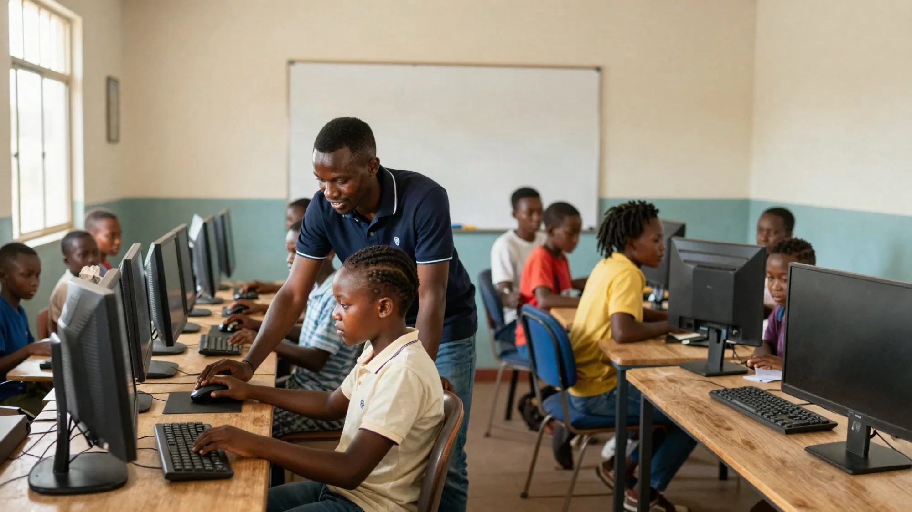

About Kasi Tech Hub
A locally-owned computer school, built in Refilwe for the people of Cullinan.
Closing the Digital Divide From Inside the Kasi
Across Refilwe and Cullinan, talented people miss out on jobs, bursaries and business growth — not because they lack ability, but because they never had access to a computer and someone patient enough to show them how it works.
Jobs are advertised online. NSFAS and university applications are online. Government posts need a Z83 form. Customers search for businesses on their phones. Kasi Tech Hub was started to make sure nobody in our community is left behind.
Kasi Tech Hub (Pty) Ltd is a CIPC-registered South African company, founded and directed by Thabang Seloane, a Diploma in IT graduate committed to bringing practical digital skills to the community he grew up in.

Our Mission & Values
To give every person in Refilwe and Cullinan the digital skills they need to find work, further their education and grow their business.
Patience
No question is a silly question. We teach at your pace.
Practical
Everything we teach is something you will use in real life, this week.
Community
Locally owned and run, and priced for local households.

Built for Our Community
- Unemployed youth & school leavers — digital skills and a CV to enter the job market.
- Adults with little computer knowledge — a friendly, non-intimidating place to learn.
- Matriculants & students — help with NSFAS, university and bursary applications.
- Small business owners & informal traders — marketing tools to reach more customers.
| Company details | |
|---|---|
| Registered name | Kasi Tech Hub (Pty) Ltd |
| Registration | CIPC-registered South African private company |
| Director | Thabang Seloane (Diploma in Information Technology) |
| Address | 1609 10th Street, Refilwe, Cullinan, 1003, Gauteng |
| Phone / WhatsApp | 079 949 1794 |